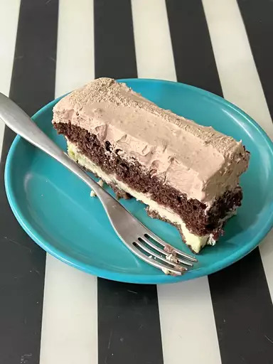

Home
Italian Love Cake Recipe

Description
Italian Love Cake is a magical dessert that creates three delicious layers all on its own while baking. It starts with a rich chocolate cake base and a creamy ricotta cheese filling; as it cooks, the layers naturally switch places to form a stunning custard center topped with moist cake. Finished with a layer of chocolate pudding and whipped cream, this sweet treat is the perfect balance of textures and is sure to become a family favorite.
Ingredients
- 1 (15.25 ounce) package chocolate cake mix
- 1 cup water
- 7 large eggs, divided
- 1/2 cup vegetable oil
- 2 pints part-skim ricotta cheese
- 3/4 cup white sugar
- 1 teaspoon vanilla extract
- 1 (3.9 ounce) package instant chocolate pudding mix
- 1 cup milk
- 1 (12 ounce) container frozen whipped topping, thawed
Steps
- Preheat the oven to 350 degrees F (175 degrees C). Lightly grease a 9x13-inch baking dish.
- Combine cake mix, water, 3 eggs, and oil in a large bowl; beat with an electric mixer until well combined, about 2 minutes. Pour batter into prepared baking dish. Set aside.
- To make the ricotta cheese layer: Combine ricotta cheese, sugar, vanilla, and remaining 4 eggs in a separate bowl; blend well. Spread ricotta mixture evenly over the top of the cake batter.
- Bake in the preheated oven until or toothpick inserted in the center comes out clean, about 1 hour 15 minutes if using a glass baking dish, or 1 1/2 hours if using a metal pan. Allow cake to cool completely before topping.
- To make the topping: Blend pudding mix and milk until thickened. Blend in whipped topping. Spread over cooled cake.